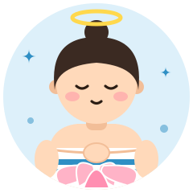

- S低温じっくり
- A外気浴派
- Oひとりサウナ
- R計画・ルーティン
瞑想家
The Meditator
穏やかな熱と風の中で、心を整える
静けさの中でととのう
静寂派タイプ決まったリズムで、低めの温度でゆっくり温まり、外気浴でゆっくり呼吸。サウナを『整える時間』として大切にします。
強み
- 落ち着き
- 習慣化が得意
- 心の安定
気をつけたいこと
- たまには冒険も。違うサウナで刺激を
相性のいいタイプ
サウナ室の空気を一瞬で明るくする人気者
ムードメーカーの明るさが、ひとりの時間を大切にする心をやさしくほぐしてくれる。
おすすめのサウナ
静かな外気浴スペースのある施設
- みはらしの湯 長野県 温泉
南アルプスを望む絶景の温泉外気浴スペースからの眺めが評判 地図で見る - ホテルマウント富士 山梨県 山中湖 ホテル・カプセル
富士山を望む絶景外気浴富士山の天然水かけ流しの水風呂と、富士山を望む外気浴が名物 公式サイト地図で見る - Sauna muku 長野県 茅野市 宿泊・アウトドア
八ヶ岳山麓の薪サウナ薪ストーブのサウナと、野外の陶器の水風呂、小泉山を望む外気浴 公式サイト地図で見る
※ 営業状況・料金・利用条件は変わることがあります。訪問前に公式情報をご確認ください。
あなたのタイプは？
瞑想家は、サウナの好みで分かれる16タイプのひとつです。質問に答えるだけで、あなたの「ととのい方」がわかります（無料・登録不要・約3分）。
ほかのタイプ
※ 娯楽目的の診断です。サウナは体調に合わせて無理せず、水分補給をしてお楽しみください。